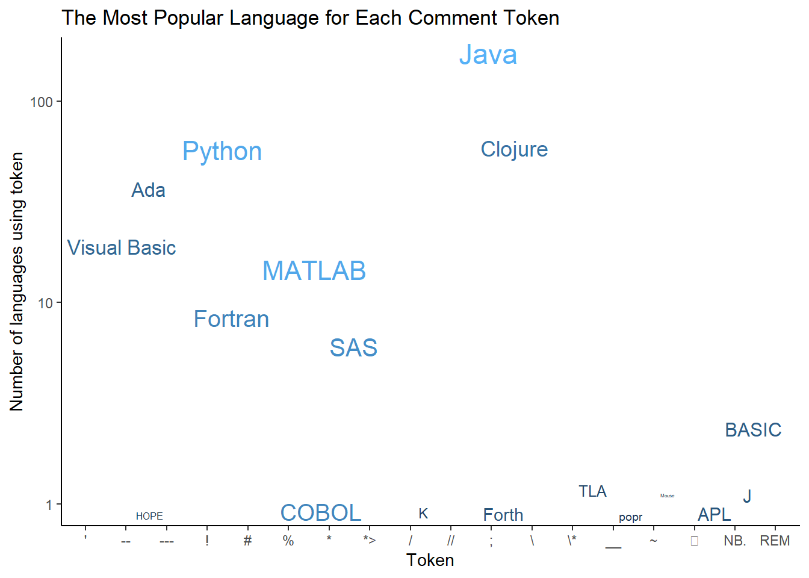

library(tidytuesdayR)
library(tidyverse)
library(skimr)
library(ggthemes)
library(gt)
library(ggrepel)Yesterday, I participated in my first #TidyTuesday challenge. My goal was to get something out on the day of the challenge rather than perfection. I did notice that the skimr output wasn’t formatted nicely on the webpage. Today, I’m going to delve into the skimr documentation and make a nicer version of the output. Secondly, I’m going to fix up my final figure, which is the one I shared on social media.
Skimr
Skimr is a package that provides statistical summaries of the variables in your dataframe. It also provides information about the missingness of each variable.
# Get the Data
# Read in with tidytuesdayR package
# This loads the readme and all the datasets for the week of interest
# Either ISO-8601 date or year/week works!
#tuesdata <- tidytuesdayR::tt_load('2023-03-21')
tuesdata <- tidytuesdayR::tt_load(2023, week = 12)
languages <- tuesdata$languagesHere is what the raw skimr output looks like.
# | label: raw-skim-output
skimr::skim(languages)| Name | languages |
| Number of rows | 4303 |
| Number of columns | 49 |
| _______________________ | |
| Column type frequency: | |
| character | 21 |
| logical | 4 |
| numeric | 24 |
| ________________________ | |
| Group variables | None |
Variable type: character
| skim_variable | n_missing | complete_rate | min | max | empty | n_unique | whitespace |
|---|---|---|---|---|---|---|---|
| pldb_id | 0 | 1.00 | 1 | 52 | 0 | 4303 | 0 |
| title | 0 | 1.00 | 1 | 56 | 0 | 4267 | 0 |
| description | 3480 | 0.19 | 4 | 2273 | 0 | 811 | 0 |
| type | 0 | 1.00 | 2 | 27 | 0 | 40 | 0 |
| creators | 3203 | 0.26 | 2 | 253 | 0 | 985 | 0 |
| website | 2928 | 0.32 | 13 | 131 | 0 | 1368 | 0 |
| domain_name | 3588 | 0.17 | 6 | 32 | 0 | 700 | 0 |
| reference | 2314 | 0.46 | 15 | 251 | 0 | 1955 | 0 |
| github_repo | 3402 | 0.21 | 25 | 73 | 0 | 897 | 0 |
| github_repo_description | 3438 | 0.20 | 4 | 419 | 0 | 853 | 0 |
| github_language | 3829 | 0.11 | 1 | 30 | 0 | 474 | 0 |
| github_language_tm_scope | 3837 | 0.11 | 4 | 34 | 0 | 361 | 0 |
| github_language_type | 3837 | 0.11 | 4 | 11 | 0 | 4 | 0 |
| github_language_ace_mode | 3838 | 0.11 | 1 | 16 | 0 | 96 | 0 |
| github_language_file_extensions | 3833 | 0.11 | 1 | 606 | 0 | 466 | 0 |
| wikipedia | 2731 | 0.37 | 32 | 104 | 0 | 1566 | 0 |
| wikipedia_summary | 2884 | 0.33 | 17 | 6741 | 0 | 1407 | 0 |
| wikipedia_related | 3145 | 0.27 | 1 | 1761 | 0 | 1059 | 0 |
| line_comment_token | 3831 | 0.11 | 1 | 7 | 0 | 23 | 0 |
| origin_community | 1190 | 0.72 | 3 | 305 | 0 | 2232 | 0 |
| file_type | 3213 | 0.25 | 2 | 6 | 0 | 4 | 0 |
Variable type: logical
| skim_variable | n_missing | complete_rate | mean | count |
|---|---|---|---|---|
| features_has_comments | 3683 | 0.14 | 1.00 | TRU: 617, FAL: 3 |
| features_has_semantic_indentation | 3722 | 0.14 | 0.11 | FAL: 516, TRU: 65 |
| features_has_line_comments | 3765 | 0.13 | 0.96 | TRU: 517, FAL: 21 |
| is_open_source | 3792 | 0.12 | 0.89 | TRU: 453, FAL: 58 |
Variable type: numeric
| skim_variable | n_missing | complete_rate | mean | sd | p0 | p25 | p50 | p75 | p100 | hist |
|---|---|---|---|---|---|---|---|---|---|---|
| appeared | 0 | 1.00 | 1991.11 | 111.44 | -2000 | 1984.00 | 1997.0 | 2012.00 | 2023 | ▁▁▁▁▇ |
| domain_name_registered | 3801 | 0.12 | 2011.33 | 7.02 | 1990 | 2007.00 | 2013.0 | 2017.00 | 2023 | ▁▃▃▇▆ |
| isbndb | 3217 | 0.25 | 7.71 | 33.16 | 0 | 0.00 | 0.0 | 2.00 | 400 | ▇▁▁▁▁ |
| book_count | 0 | 1.00 | 2.08 | 17.34 | 0 | 0.00 | 0.0 | 0.00 | 401 | ▇▁▁▁▁ |
| semantic_scholar | 3545 | 0.18 | 3.79 | 8.32 | 0 | 0.00 | 0.0 | 3.00 | 52 | ▇▁▁▁▁ |
| language_rank | 0 | 1.00 | 2151.00 | 1242.31 | 0 | 1075.50 | 2151.0 | 3226.50 | 4302 | ▇▇▇▇▇ |
| github_repo_stars | 3414 | 0.21 | 2127.40 | 7554.02 | 0 | 29.00 | 194.0 | 1071.00 | 88526 | ▇▁▁▁▁ |
| github_repo_forks | 3417 | 0.21 | 261.29 | 1203.00 | 0 | 2.25 | 16.0 | 91.50 | 23732 | ▇▁▁▁▁ |
| github_repo_updated | 3418 | 0.21 | 2021.39 | 1.76 | 2012 | 2022.00 | 2022.0 | 2022.00 | 2023 | ▁▁▁▁▇ |
| github_repo_subscribers | 3418 | 0.21 | 62.34 | 200.88 | 0 | 4.00 | 13.0 | 44.00 | 2910 | ▇▁▁▁▁ |
| github_repo_created | 3425 | 0.20 | 2015.84 | 3.48 | 2006 | 2013.00 | 2016.0 | 2019.00 | 2022 | ▁▅▇▇▇ |
| github_repo_issues | 3518 | 0.18 | 123.03 | 546.26 | 0 | 1.00 | 9.0 | 61.00 | 9522 | ▇▁▁▁▁ |
| github_repo_first_commit | 3567 | 0.17 | 2014.74 | 4.99 | 1987 | 2012.00 | 2015.0 | 2018.00 | 2022 | ▁▁▁▆▇ |
| github_language_repos | 3833 | 0.11 | 197134.67 | 1226900.57 | 0 | 91.25 | 725.5 | 7900.25 | 16046489 | ▇▁▁▁▁ |
| wikipedia_daily_page_views | 2837 | 0.34 | 227.13 | 783.55 | -1 | 9.00 | 24.0 | 99.00 | 13394 | ▇▁▁▁▁ |
| wikipedia_backlinks_count | 2877 | 0.33 | 318.55 | 1635.29 | 1 | 13.00 | 39.0 | 126.00 | 34348 | ▇▁▁▁▁ |
| wikipedia_page_id | 2893 | 0.33 | 9167847.21 | 13506832.90 | 928 | 375153.75 | 2114700.5 | 12321223.00 | 63063548 | ▇▁▁▁▁ |
| wikipedia_appeared | 2958 | 0.31 | 1991.14 | 17.03 | 1830 | 1980.00 | 1994.0 | 2005.00 | 2019 | ▁▁▁▃▇ |
| wikipedia_created | 3040 | 0.29 | 2005.75 | 3.77 | 2001 | 2003.00 | 2005.0 | 2007.00 | 2020 | ▇▇▂▁▁ |
| wikipedia_revision_count | 3130 | 0.27 | 330.43 | 813.26 | 1 | 35.00 | 84.0 | 242.00 | 10104 | ▇▁▁▁▁ |
| last_activity | 0 | 1.00 | 2000.62 | 84.60 | -900 | 1992.00 | 2006.0 | 2021.00 | 2023 | ▁▁▁▁▇ |
| number_of_users | 0 | 1.00 | 13771.26 | 227712.95 | 0 | 0.00 | 20.0 | 230.00 | 7179119 | ▇▁▁▁▁ |
| number_of_jobs | 0 | 1.00 | 422.18 | 12572.99 | 0 | 0.00 | 0.0 | 0.00 | 771996 | ▇▁▁▁▁ |
| central_package_repository_count | 1482 | 0.66 | 0.00 | 0.00 | 0 | 0.00 | 0.0 | 0.00 | 0 | ▁▁▇▁▁ |
My main objection is that the numerical summary is too wide and has a scroll bar. I especially want the histogram to be viewable on the first screen. I also don’t particularly care about all the quartile information; min and max are enough. If I want to delve more into the stats of a variable, I will do it another way, not with skimr.
The package let’s you set the summary functions that skimr calls. Drop the
# | label: custom-skim-functions
my_skim <- skim_with(numeric = sfl(p25 = NULL, p50 = NULL, p75 = NULL))
my_skim(languages)| Name | languages |
| Number of rows | 4303 |
| Number of columns | 49 |
| _______________________ | |
| Column type frequency: | |
| character | 21 |
| logical | 4 |
| numeric | 24 |
| ________________________ | |
| Group variables | None |
Variable type: character
| skim_variable | n_missing | complete_rate | min | max | empty | n_unique | whitespace |
|---|---|---|---|---|---|---|---|
| pldb_id | 0 | 1.00 | 1 | 52 | 0 | 4303 | 0 |
| title | 0 | 1.00 | 1 | 56 | 0 | 4267 | 0 |
| description | 3480 | 0.19 | 4 | 2273 | 0 | 811 | 0 |
| type | 0 | 1.00 | 2 | 27 | 0 | 40 | 0 |
| creators | 3203 | 0.26 | 2 | 253 | 0 | 985 | 0 |
| website | 2928 | 0.32 | 13 | 131 | 0 | 1368 | 0 |
| domain_name | 3588 | 0.17 | 6 | 32 | 0 | 700 | 0 |
| reference | 2314 | 0.46 | 15 | 251 | 0 | 1955 | 0 |
| github_repo | 3402 | 0.21 | 25 | 73 | 0 | 897 | 0 |
| github_repo_description | 3438 | 0.20 | 4 | 419 | 0 | 853 | 0 |
| github_language | 3829 | 0.11 | 1 | 30 | 0 | 474 | 0 |
| github_language_tm_scope | 3837 | 0.11 | 4 | 34 | 0 | 361 | 0 |
| github_language_type | 3837 | 0.11 | 4 | 11 | 0 | 4 | 0 |
| github_language_ace_mode | 3838 | 0.11 | 1 | 16 | 0 | 96 | 0 |
| github_language_file_extensions | 3833 | 0.11 | 1 | 606 | 0 | 466 | 0 |
| wikipedia | 2731 | 0.37 | 32 | 104 | 0 | 1566 | 0 |
| wikipedia_summary | 2884 | 0.33 | 17 | 6741 | 0 | 1407 | 0 |
| wikipedia_related | 3145 | 0.27 | 1 | 1761 | 0 | 1059 | 0 |
| line_comment_token | 3831 | 0.11 | 1 | 7 | 0 | 23 | 0 |
| origin_community | 1190 | 0.72 | 3 | 305 | 0 | 2232 | 0 |
| file_type | 3213 | 0.25 | 2 | 6 | 0 | 4 | 0 |
Variable type: logical
| skim_variable | n_missing | complete_rate | mean | count |
|---|---|---|---|---|
| features_has_comments | 3683 | 0.14 | 1.00 | TRU: 617, FAL: 3 |
| features_has_semantic_indentation | 3722 | 0.14 | 0.11 | FAL: 516, TRU: 65 |
| features_has_line_comments | 3765 | 0.13 | 0.96 | TRU: 517, FAL: 21 |
| is_open_source | 3792 | 0.12 | 0.89 | TRU: 453, FAL: 58 |
Variable type: numeric
| skim_variable | n_missing | complete_rate | mean | sd | p0 | p100 | hist |
|---|---|---|---|---|---|---|---|
| appeared | 0 | 1.00 | 1991.11 | 111.44 | -2000 | 2023 | ▁▁▁▁▇ |
| domain_name_registered | 3801 | 0.12 | 2011.33 | 7.02 | 1990 | 2023 | ▁▃▃▇▆ |
| isbndb | 3217 | 0.25 | 7.71 | 33.16 | 0 | 400 | ▇▁▁▁▁ |
| book_count | 0 | 1.00 | 2.08 | 17.34 | 0 | 401 | ▇▁▁▁▁ |
| semantic_scholar | 3545 | 0.18 | 3.79 | 8.32 | 0 | 52 | ▇▁▁▁▁ |
| language_rank | 0 | 1.00 | 2151.00 | 1242.31 | 0 | 4302 | ▇▇▇▇▇ |
| github_repo_stars | 3414 | 0.21 | 2127.40 | 7554.02 | 0 | 88526 | ▇▁▁▁▁ |
| github_repo_forks | 3417 | 0.21 | 261.29 | 1203.00 | 0 | 23732 | ▇▁▁▁▁ |
| github_repo_updated | 3418 | 0.21 | 2021.39 | 1.76 | 2012 | 2023 | ▁▁▁▁▇ |
| github_repo_subscribers | 3418 | 0.21 | 62.34 | 200.88 | 0 | 2910 | ▇▁▁▁▁ |
| github_repo_created | 3425 | 0.20 | 2015.84 | 3.48 | 2006 | 2022 | ▁▅▇▇▇ |
| github_repo_issues | 3518 | 0.18 | 123.03 | 546.26 | 0 | 9522 | ▇▁▁▁▁ |
| github_repo_first_commit | 3567 | 0.17 | 2014.74 | 4.99 | 1987 | 2022 | ▁▁▁▆▇ |
| github_language_repos | 3833 | 0.11 | 197134.67 | 1226900.57 | 0 | 16046489 | ▇▁▁▁▁ |
| wikipedia_daily_page_views | 2837 | 0.34 | 227.13 | 783.55 | -1 | 13394 | ▇▁▁▁▁ |
| wikipedia_backlinks_count | 2877 | 0.33 | 318.55 | 1635.29 | 1 | 34348 | ▇▁▁▁▁ |
| wikipedia_page_id | 2893 | 0.33 | 9167847.21 | 13506832.90 | 928 | 63063548 | ▇▁▁▁▁ |
| wikipedia_appeared | 2958 | 0.31 | 1991.14 | 17.03 | 1830 | 2019 | ▁▁▁▃▇ |
| wikipedia_created | 3040 | 0.29 | 2005.75 | 3.77 | 2001 | 2020 | ▇▇▂▁▁ |
| wikipedia_revision_count | 3130 | 0.27 | 330.43 | 813.26 | 1 | 10104 | ▇▁▁▁▁ |
| last_activity | 0 | 1.00 | 2000.62 | 84.60 | -900 | 2023 | ▁▁▁▁▇ |
| number_of_users | 0 | 1.00 | 13771.26 | 227712.95 | 0 | 7179119 | ▇▁▁▁▁ |
| number_of_jobs | 0 | 1.00 | 422.18 | 12572.99 | 0 | 771996 | ▇▁▁▁▁ |
| central_package_repository_count | 1482 | 0.66 | 0.00 | 0.00 | 0 | 0 | ▁▁▇▁▁ |
Another attempt:
joined <- read_csv("processed_lang.csv" , show_col_types = FALSE)Now the original figure
joined %>%
ggplot(aes(line_comment_token, n, size = log(number_of_users),
color = log(number_of_users), label = title)) +
# geom_point() +
scale_y_log10() +
geom_text_repel(show.legend = FALSE) +
ggtitle("The Most Popular Language for Each Comment Token") +
xlab("Token") +
ylab("Number of languages using token") +
theme_classic()
Citation
BibTeX citation:
@online{e.sinks,
author = {Louise E. Sinks},
title = {TidyTuesday {Week} 12: {Programming} {Languages} {Revisited}},
url = {https://lsinks.github.io/},
langid = {en}
}
For attribution, please cite this work as:
Louise E. Sinks. n.d. “TidyTuesday Week 12: Programming Languages
Revisited.” https://lsinks.github.io/.